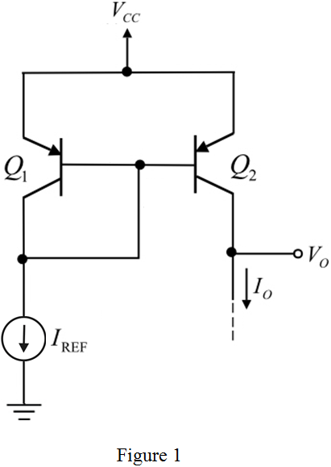
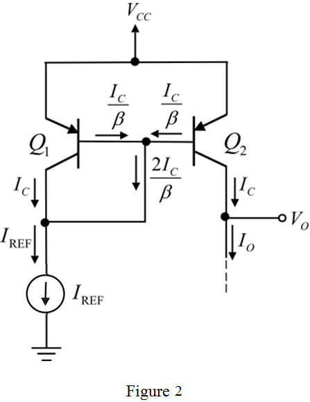

Step 1:
Refer to Figure 7.28 in the textbook for a BJT current mirror circuit diagram using npn transistors.
According to Figure 7.28, draw the basic current mirror circuit diagram using pnp transistors.

Hence, the pnp version of basic current mirror circuit is drawn.
Step 2:
The modified circuit diagram with current directions is shown in Figure 2.

Step 3:
Here, the pnp transistor current gain parameter, . The finite  causes an error in the current transfer ratio of the BJT. The current transfer ratio is the ratio of the area of emitter-base junction of transistor
causes an error in the current transfer ratio of the BJT. The current transfer ratio is the ratio of the area of emitter-base junction of transistor  to the area of emitter-base junction of transistor,
to the area of emitter-base junction of transistor,  .
.
Hence relation between output current and reference current is,
Apply Kirchhoff’s current law at the emitter terminal of transistor,  .
.
Step 4:
Substitute 20 for  to calculate the current transfer ratio.
to calculate the current transfer ratio.
Therefore, the current transfer ratio or current gain is, .